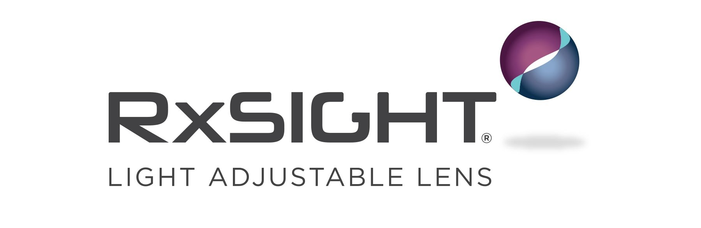

0
Intro - 브랜드 인지 BRAND
0:00 - 0:03
Scene Intent / 씬 의도
프리미엄 의료 기술이라는 첫인상 형성을 위한 깨끗하고 세련된 브랜드 앰배서더 로고 노출.

Subtitle / 자막 (무음 대응)
RxSight LAL (Light Adjustable Lens)
Visual Direction / 비주얼 디렉션
[카메라] 정면 고정. 로고가 중앙에 유려하게 페이드인.
[조명] 부드러운 하이키 화이트 조명으로 신뢰감 형성.
[트랜지션] 디졸브 아웃 (1.5초)
[조명] 부드러운 하이키 화이트 조명으로 신뢰감 형성.
[트랜지션] 디졸브 아웃 (1.5초)
Audio / 오디오
NA (Narration/Dialog)
(침묵)
BGM (Music)
맑고 투명한 시그니처 사운드 효과 (앰비언트 느낌)
SFX (Sound Effects)
부드러운 스위시 사운드 (로고 등장 시)